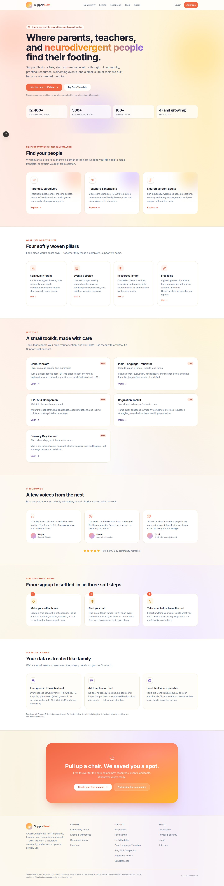

Home — SupportNest landing
The front door. A warm gradient hero with floating coral / sun / lavender blobs introduces SupportNest as a parent platform for parents, teachers, and neurodivergent people. The page sets expectations (free, ad-free, kind) and surfaces the four pillars that follow: community, events, resources, and free tools.
